调试模式
回顾 😌
- 我们上次搭建了开发环境
- 使用tmux建立了2个子标签页
- 这里面的路由核心是web.xml
- web.xml是从url路由到class的核心
- web.xml是后端程序的核心
- 出了错就层层排错
- 可是有这样一个问题
- 就是出了预想不到的错误
- 去哪里查看报错信息呢？🤔
搜索
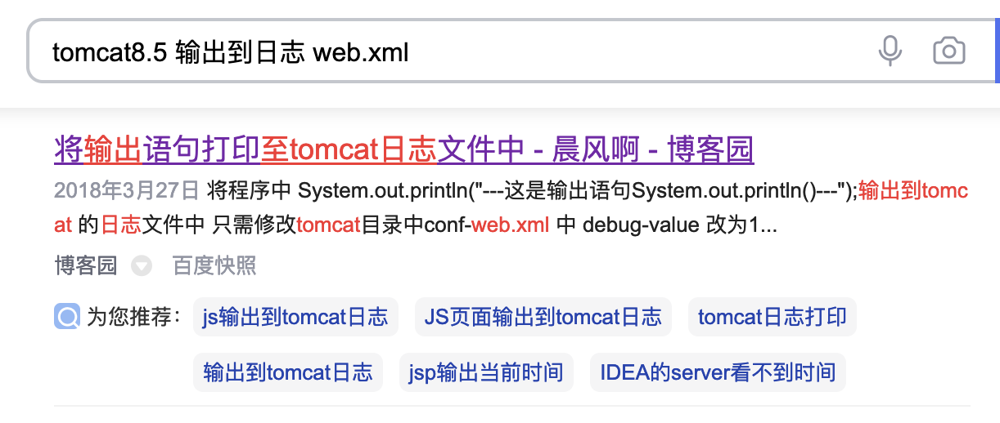
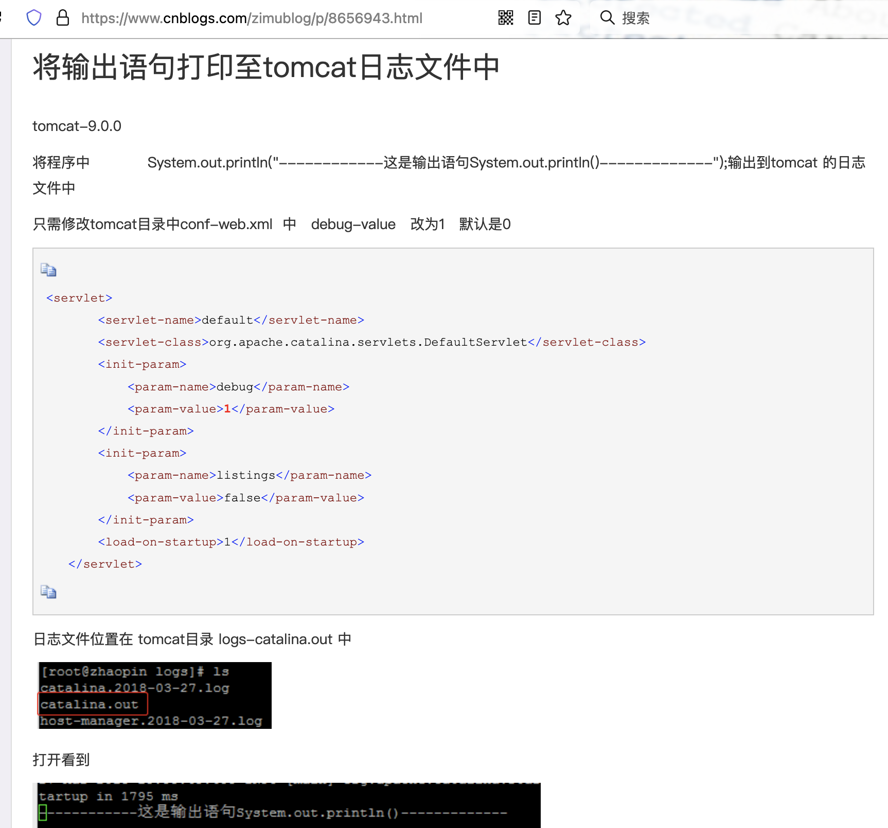
web.xml
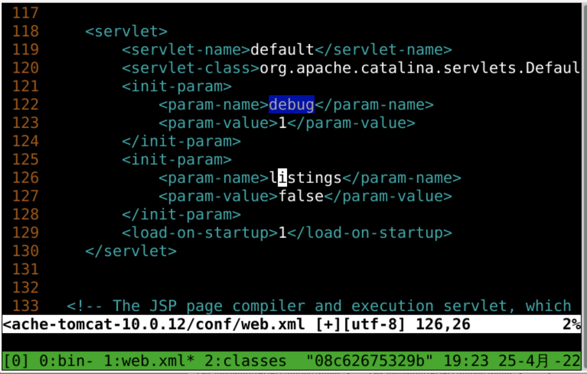
debug
- 晶体管计算机之前用的是电子管计算机
- 电子管之前用的是继电器计算机
- 那个时代编程就是打孔和插线
- 程序的错误无论如何找不到原因的时候
- 发现原来是一只bug
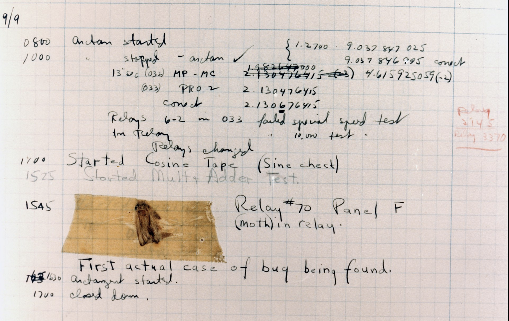
- 从此在编程中找错误原因有了新的名称
- 我们要做的就是让tomcat开启捉虫模式
- 我们就可以跟踪着线索(trace into)
- 哪里出了问题(bug)
- 怎么把线索埋在我们的程序里面呢？
修改java源文件
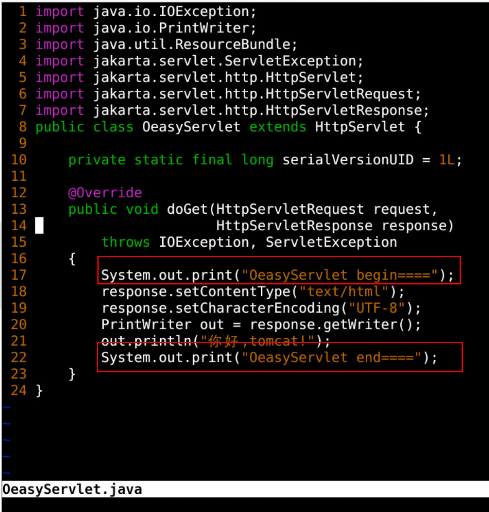
- 红框的部分就是debug信息
- System.out输出到后台的日志当中
- 不但可以输出文本
- 还可以输出变量表达式
- 这样我们就更容易定位问题所在！
-
保存并编译
-
访问指定的url确实可以运行路由到的class
- class输出到控制台的输出流写入日志了么？
- 什么是日志呢？
砍树
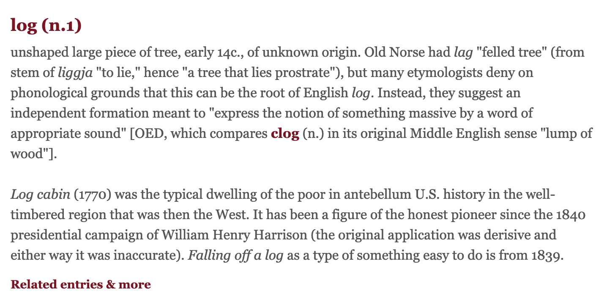
- log本意是原木
- 就是砍下来没有处理的树
- 作为动词也有砍的意思
大帆船
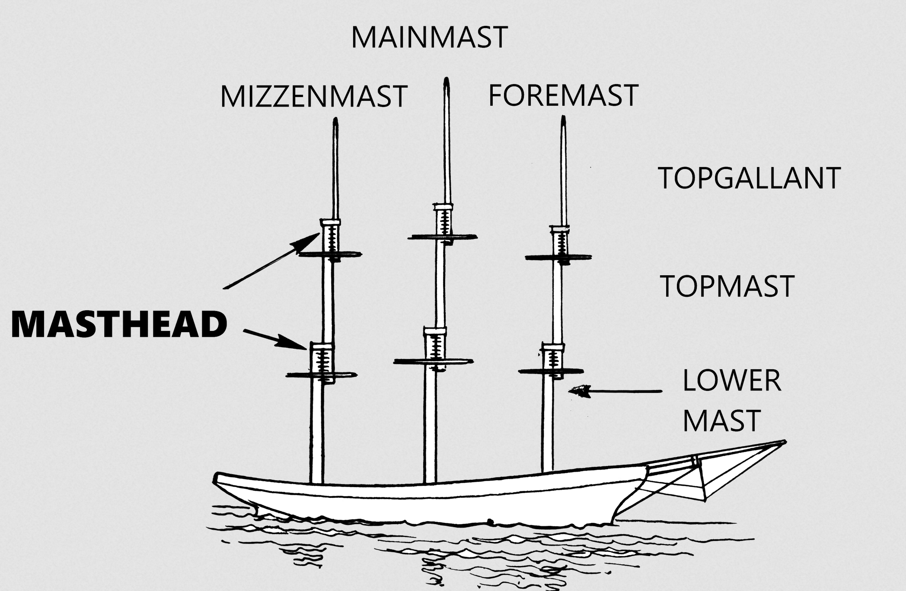
- 在地中海上
- 水手成天头枕着波涛
- 想家了
- 就在船身上、甲板上甚至桅杆上
- 轻轻滴划小道道
- 早年间知识有限只能记录天数
- 这就是航海日志
航海日志
- 后来大航海时代
- 在苍茫的大海上
- 狂风卷积着乌云
- 要对航海日志这个事情量化
- 不但要记录天数
- 而且要记录
- 上面这个就是一个测速用的log
- 当时水手们将一根连接在一根绳子上的原木(log)扔在水里
- 绳子上定期打结
- 水手们计算在给定时间内(一个沙漏)
- 通过他们手中的节数
- 给定时间用的是沙漏
- 以确定船的速度
- 今天水手和飞行员仍然用节(knot)来表示速度
航海日志进化
- 沙漏和测速log虽然简陋
- 但是总比没有强
- 根据罗盘和速度大致估算出船在地图的位置
- 所以会发生找不到藏宝岛屿山洞的事情
航海日志再进化
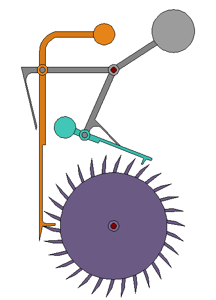
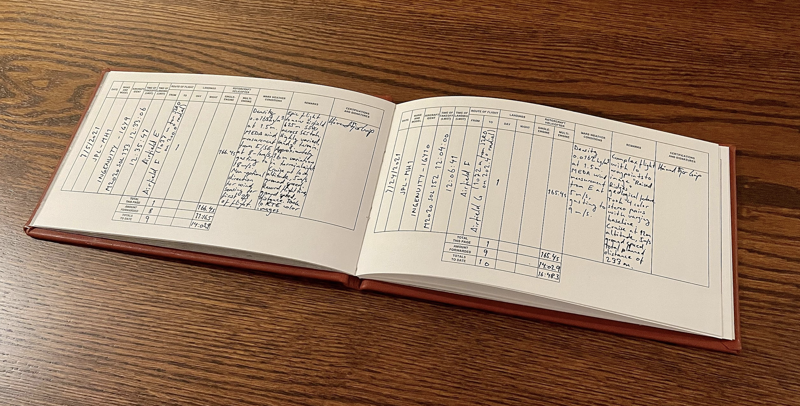
目前
- 最新科技
- 基于原子钟的时间记录
- 基于gps和北斗导航的定位系统
- 各种仪表的参数记录
- 都可以用电磁波同步到卫星或者地面站
- 实时报告、实时监测
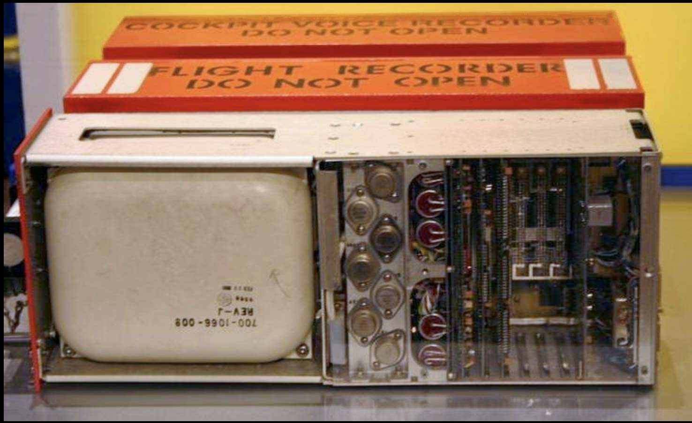
- 同时也记录到黑匣子里
- 从电子化到数字化
- 更多更详细的东西都被记录到持久的媒体中
- 作为军事、法律和商务的重要证据
- 工业化普及之后
- 一般的机器操作都有工作日志
- 那么计算机时代呢
- 如何理解log
计算机时代
- 开了机器就自动写日志了
- 如果有用户登录更要写清楚
- 登录叫做login
- 意思是logging in
- 写日志
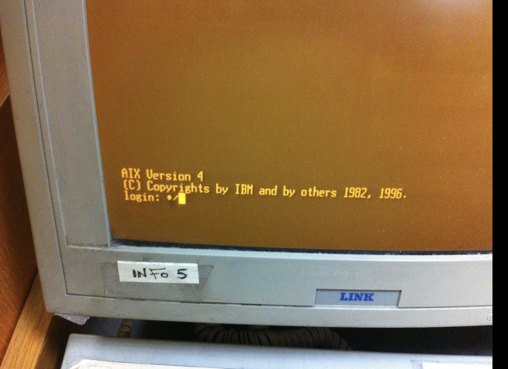
- 退出的时候叫做 log out (log off).
- 1960s开始有大型分时操作系统
- 这个专业术语也慢慢流行起来
- 日志有几种呢？
日志种类
- 日志种类
- 事件日志(Event logs)
- 交易记录(Transaction log)
- 消息日志(Message logs)
- 云时代能记录的都给记录了下来
- 电脑把自己干过的事
- 一桩桩
- 一件件
- 都像写日记一样写成日志
web服务器日志
- tomcat是动态网页服务器
- 肯定记录的都是动态网页那些事
- 谁来了
- 什么时候来的
- 都发送了什么请求
- 都给他记录下来
tomcat日志
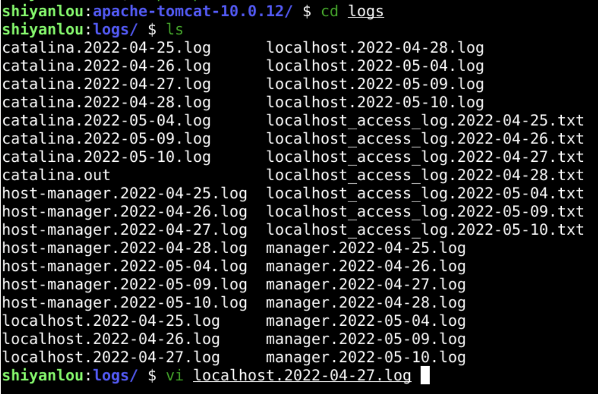
- log都在logs里面
- 有主机管理日志
- 有本地主机日志
- 有主机访问日志
- 管理日志
- 日志分日期而且分类型
- 我们打开一个看看
主机访问日志
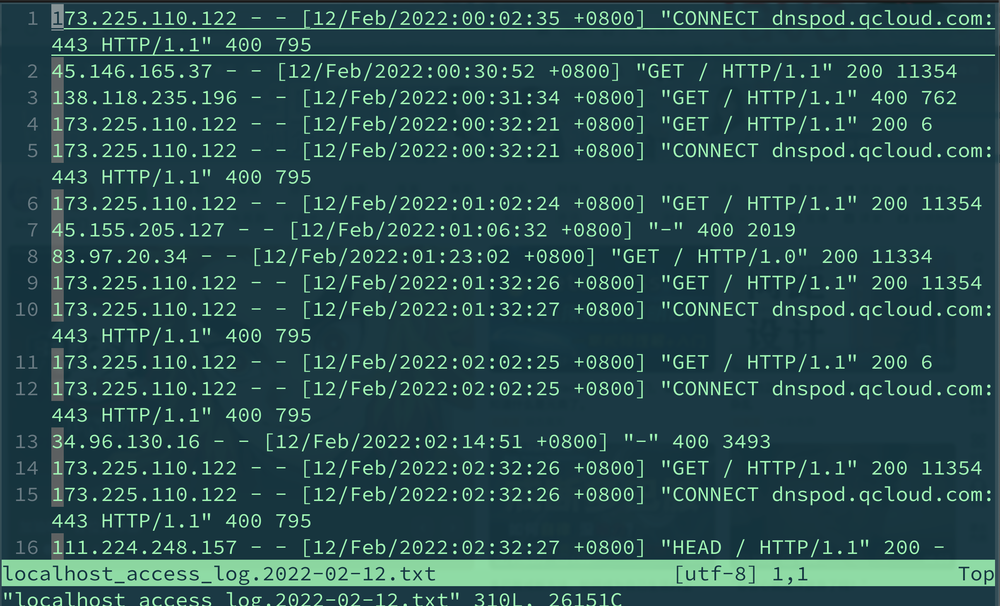
- 这就是所有ip地址对于主机在2022-02-12的访问记录
- 都有记录
- 即使你访问了一个没有路由的页面也有记录
- 任何访问都有记录！！！
- 当然现在的网站不只记录这些
- 毕竟日志不适合大规模的查询
- 现在的网站和应用还使用数据库记录着
- 你的所有操作
- 你的喜好
- 你的习惯
- 你的性别等
- 特别是通过怎么样的链路进入充值页面
- 以及在充值会员的页面停留了多久这件事情
- 而且会给用户贴上各种各样的标签
- 我们的自定义日志要看到在哪呢？
验证
- catalina.out
- 所有东西都在这里
- 我们打开看一下
- 日志是如何输出的
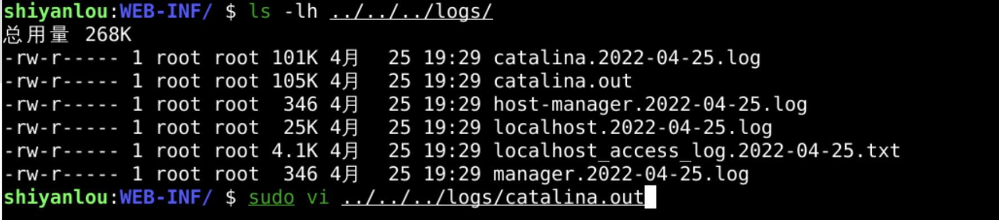
- 所以可以在程序里面写一些调试信息了
- 最终可以在日志里面看到出错的位置
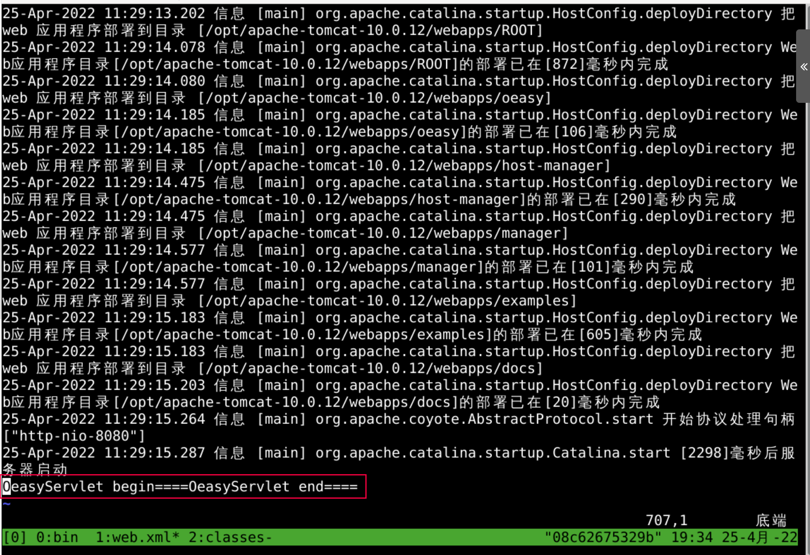
刷新
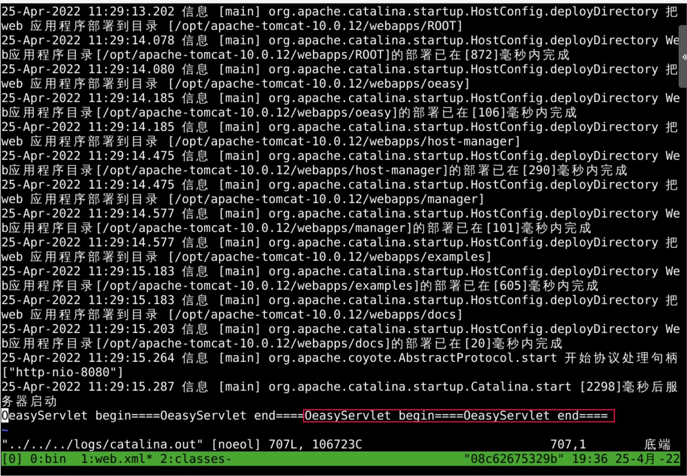
修改
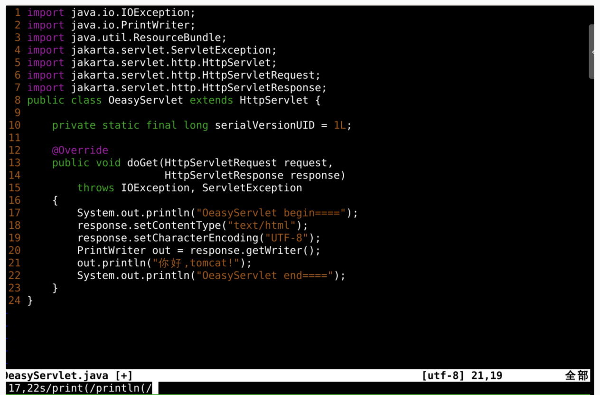
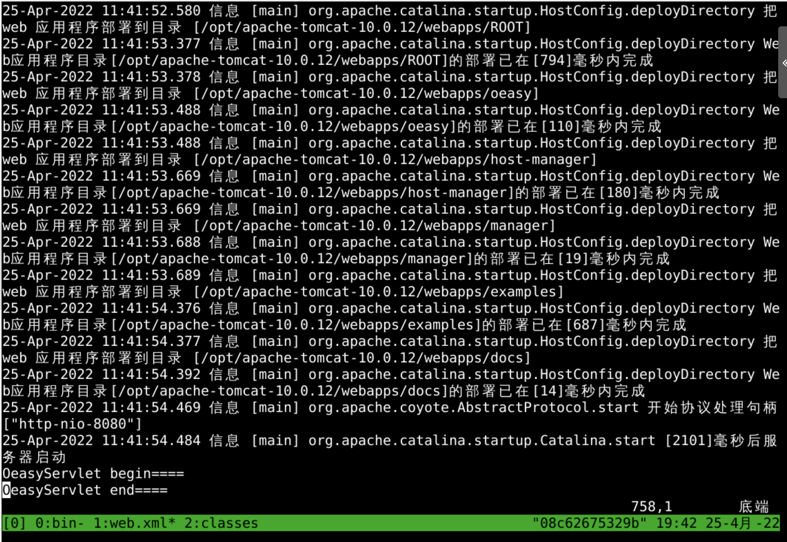
总结 🤨
- 这次搭建了debug的开发环境
- 可以在程序里面向日志中输出debug相关信息
- 这些信息写到了日志(logs)里
- logs都在后端(后台)
- servlet源程序也在后端(后台)
- web.xml是后端程序路由的核心
- 可是
- 下次再说！👋